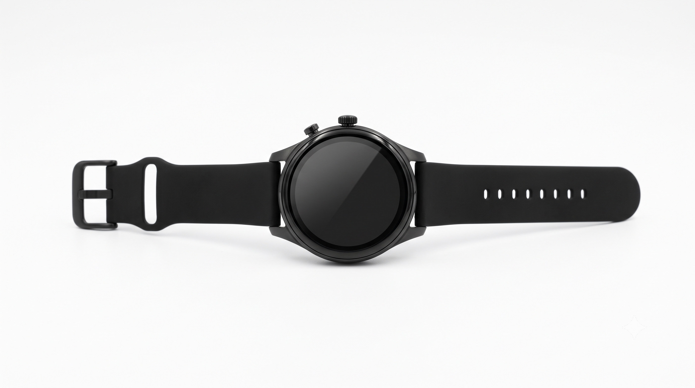

Lead II • 25mm/s
10mm/mV • 60Hz
Heart Rate
78 BPM
Blood Pressure
118/76 mmHg
Blood Oxygen (SpO₂)
98%
Stress Index (SDNN)
18 LOW
Safety Fusion #3
4.2%
Telemetry steady. Baseline vital signs within standard reference intervals.

SAHARA
00:00:00
78
BPM
NORMAL
118/76
BP
98%
SpO₂
GPS ●
Emergency Contacts
Ready
Primary:
Dad (+91 98765-43210)
Ecosystem:
SAHARA SOS Network
Audit Log
--:--:--
Wearable synced with SAHARA emergency suite.